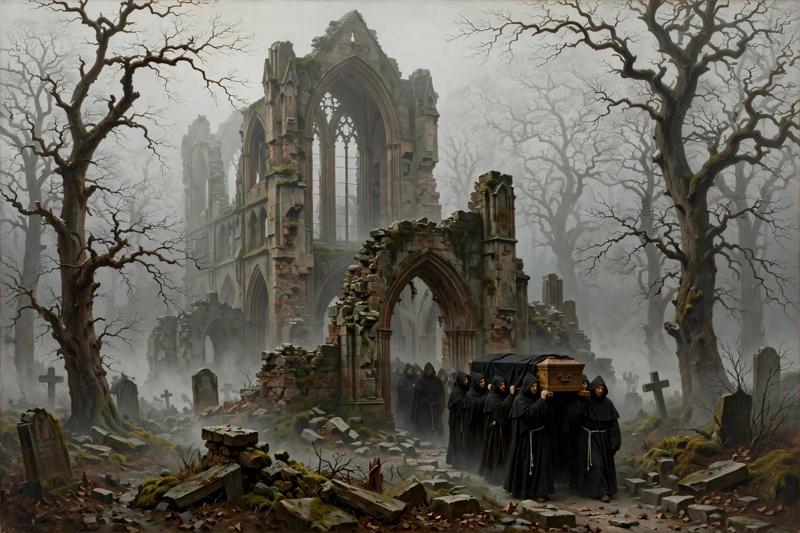

Caspar David Friedrich

The Abbey in the Oakwood (1810): monks with a coffin processing through a ruined Gothic choir among bare winter oaks in fogCaspar David Friedrich (5 September 1774 – 7 May 1840) was a German Romantic landscape painter, generally considered the most important German artist of his generation. He is best known for his mid-period allegorical landscapes, which typically feature contemplative figures silhouetted against night skies, morning mists, barren trees or Gothic ruins.
From Greifswald and the Dresden circle, Friedrich made landscape a vehicle of religious feeling: The Cross in the Mountains (1808), Monk by the Sea (1810), Chalk Cliffs on Rügen (1818) and Wanderer above the Sea of Fog (c. 1818) — the last now the single most famous image of German Romanticism. Forgotten for a century after his death in poverty, he was rediscovered in the 20th century and influenced the Symbolists, Expressionists and Surrealists.